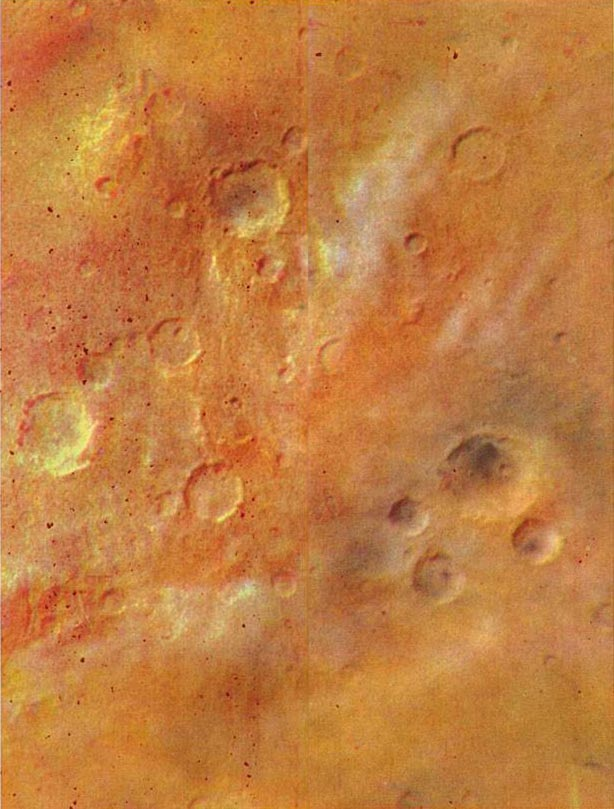
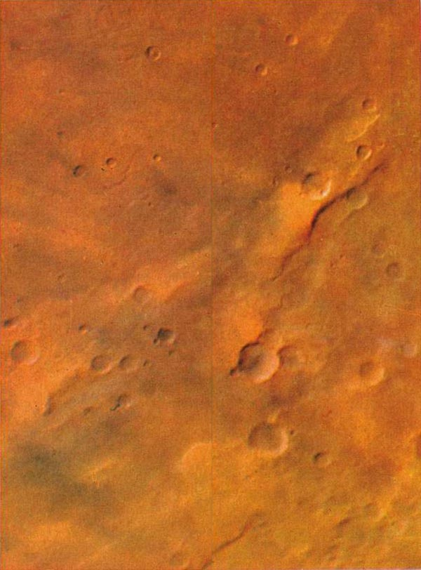
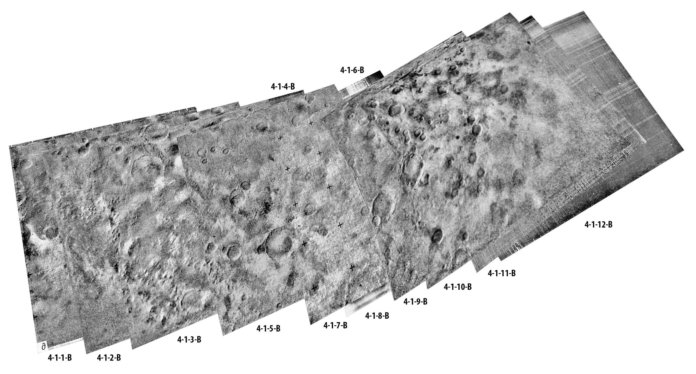

Архив космических миссий
«Марс»— автоматические межпланетные станции, которые запускались СССР с 1960 по 1973 с целью изучения планеты Марс и околопланетного пространства. Для резервирования и комплексности исследований запускали несколько серий АМС.
Официально было объявлено о запуске для исследования Марса АМС «Марс-1» из серии М-62 в 1962 году, АМС «Марс-2» и «Марс-3» серии М-71 в 1971 году, АМС «Марс-4», «Марс-5», «Марс-6», «Марс-7» серии М-73 в 1973 году. О неудачных запусках космических аппаратов серий М-60 (1М), М-62 (2МВ), М-64 (3МВ), М-69, М-71 Советский Союз не сообщал. Вышедшим на околоземные орбиты 62A и 62B американские специалисты дали названия «Спутник 22» и «Спутник 24». Вышедшая на межпланетную траекторию 3МВ-4 получила официальное наименование «Зонд-2», а вышедшая на околоземную орбиту М-71C получила наименование «Космос-419».
«Марс-1» Так как для своего времени проект «Марс» являлся первым в истории проектом такого масштаба, как освоение межпланетных пространств в области Земля-Марс, то перед ним вставал ряд технических вопросов — какой мощности и типа понадобятся двигатели и ракеты-носители для выведения на орбиту Земли необходимого полезного груза, как поведёт себя радиосвязь на больших расстояниях, с какими проблемами столкнётся электроника в условиях космической радиации межпланетного пространства в области Земля-Марс и многое другое.
Запуск на орбиту Земли успешно состоялся 1 ноября 1962 года, с космодрома Байконур, при помощи 4-ступенчатой ракеты-носителя среднего класса «Молния». «Марс-1» был успешно выведен на траекторию полёта к Марсу. За время полёта космического аппарата «Марс-1» по межпланетной траектории с ним был проведён 61 сеанс радиосвязи. При этом был получен большой объём телеметрической информации, а на его борт передано более 3000 команд. Последний сеанс состоялся 21 марта 1963 года при удалении станции от Земли на 106 млн км. Неисправность системы ориентации не позволила направить антенны на Землю и далее осуществлять радиосвязь. Исходя из баллистических данных, можно полагать, что 19 июня 1963 года неуправляемый «Марс-1» осуществил первый пролёт на расстоянии примерно 200 тыс. км от Марса и продолжил свой полёт вокруг Солнца.
«Марс-2», «Марс-3» Космические аппараты четвёртого поколения (серия М-71 — «Марс-2»/«Марс-3»). АМС дублировали друг друга. Каждая АМС состояла из орбитального аппарата (ОА), спускаемого апппарата (СА) и марсоходов ПрОП-М.
Главная техническая задача миссий «Марс-2» и «Марс-3» заключалась в доставке на орбиту и поверхность Марса автоматических марсианских станций и марсоходов, а также дальнейшее осуществление слаженной работы между ними. Спускаемые аппараты и марсоходы советских АМС программы «Марс» не справились с возложенными задачами, в то время как орбитальные аппараты выполнили все основные поставленные перед ними технические программы. Из-за неудач спускаемых аппаратов главная техническая задача всей программы «Марс» — создание на Марсе работающего научного автоматического комплекса — не была решена.
Изучение Марса в 1973—1974 гг, когда четыре советских КА «Марс-4», «Марс-5», «Марс-6», «Марс-7» практически одновременно достигли окрестностей планеты, приобрело новое качество. Цель полёта: определение физических характеристик грунта, свойств поверхностной породы, экспериментальная проверка возможности получения телевизионных изображений и др.
Научные исследования, проведённые КА «Марс-4», «Марс-5», «Марс-6», «Марс-7» разносторонни и обширны. КА «Марс-4» провёл фотографирование Марса с пролётной траектории. «Марс-5» — искусственный спутник Марса. «Марс-5» передал новые сведения об этой планете и окружающем её пространстве, сделал качественные фотографии марсианской поверхности, в том числе цветные. Спускаемый аппарат «Марса-6» совершил посадку на планету, впервые передав данные о параметрах марсианской атмосферы, полученные во время снижения. КА «Марс-6» и «Марс-7» исследовали космическое пространство с гелиоцентрической орбиты. «Марс-7» в сентябре-ноябре 1973 года зафиксировал связь между возрастанием потока протонов и скорости солнечного ветра. На фотоснимках поверхности Марса, отличающихся весьма высоким качеством, можно различить детали размером до 100 м. Это ставит фотографирование в число основных средств изучения планеты. Поскольку фотографирование проводилось с использованием цветных светофильтров путём синтезирования получены цветные изображения ряда участков поверхности. Цветные снимки также отличаются высоким качеством и пригодны для ареолого-морфологических и фотометрических исследований.
С помощью двухканального ультрафиолетового фотометра с высоким пространственным разрешением получены фотометрические профили атмосферы у лимба планеты в недоступной для наземных наблюдений области спектра 2600—2800 A. Эти профили помогли впервые обнаружить следы озона в атмосфере Марса (данные американских аппаратов «Маринер-6», «Маринер-7», «Маринер-9» по озону относились к твёрдой поверхности полярной шапки), а также заметное аэрозольное поглощение даже в отсутствии пылевых бурь. С помощью этих данных можно вычислить характеристики аэрозольного слоя. Измерения содержания атмосферного озона позволяют оценить концентрацию атомарного кислорода в нижней атмосфере и скорость его вертикального переноса из верхней атмосферы, что важно для выбора модели, объясняющей стабильность существующей на Марсе атмосферы из углекислого газа. Результаты измерений на освещённом диске планеты могут быть использованы для изучения её рельефа. Исследования магнитного поля в околомарсианском пространстве, проведённые КА «Марс-5» подтвердили вывод, сделанный на основании аналогичных исследований КА «Марс-2», «Марс-3», о том, что вблизи планеты существует магнитное поле порядка 30 гамм (в 7-10 раз больше величины межпланетного невозмущённого поля, переносимого солнечным ветром). Предполагалось, что это магнитное поле принадлежит самой планете, и «Марс-5» помог получить дополнительные аргументы в пользу этой гипотезы. Предварительная обработка данных КА «Марс-7» об интенсивности излучения в резонансной линии атомарного водорода Лайман-альфа позволила оценить профиль этой линии в межпланетном пространстве и определить в ней две компоненты, каждая из которых вносит приблизительно равный вклад в суммарную интенсивность излучения. Полученная информация даст возможность вычислить скорость, температуру и плотность втекающего в солнечную систему межзвёздного водорода, а также выделить вклад галактического излучения в линии Лайман-альфа. Этот эксперимент выполнялся совместно с французскими учеными. По аналогичным измерениям с борта КА «Марс-5» впервые непосредственно измерена температура атомарного водорода в верхней атмосфере Марса. Предварительная обработка данных показала, что эта температура близка к 350°К.
Спускаемый аппарат «Марса-6» проводил измерения химического состава марсианской атмосферы при помощи масс-спектрометра радиочастотного типа. Вскоре после раскрытия основного парашюта сработал механизм вскрытия анализатора, и атмосфера Марса получила доступ в прибор. Сами масс-спектры должны были переданы после посадки и на Земле получены не были, однако при анализе параметра ток магнитоионизационного насоса масс-спектрографа, переданного по телеметрическому каналу в ходе парашютного спуска, было предположено, что содержание аргона в атмосфере планеты может составлять от 25 % до 45 %. (По уточнённым данным доля аргона в атмосфере Марса — 1,6 %). Содержание аргона имеет принципиальное значение для понимания эволюции атмосферы Марса. На спускаемом аппарате осуществлялись также измерения давления и окружающей температуры. Результаты этих измерений весьма важны как для расширения знаний о планете, так и для выявления условий, в которых должны работать будущие марсианские станции.
Совместно с французскими учеными выполнен также радиоастрономический эксперимент — измерения радиоизлучения Солнца в метровом диапазоне. Прием излучения одновременно на Земле и на борту космического аппарата, удалённого от нашей планеты на сотни миллионов километров, позволяет восстановить объемную картину процесса генерации радиоволн и получить данные о потоках заряженных частиц, ответственных за эти процессы. В этом эксперименте решалась и другая задача — поиск кратковременных всплесков радиоизлучения, которые могут, как предполагается, возникать в далеком космосе за счёт явлений взрывного типа в ядрах галактик, при вспышках сверхновых звёзд и других процессах.


